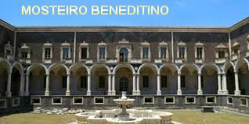
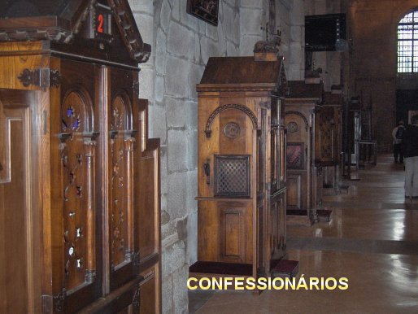
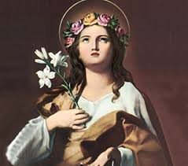
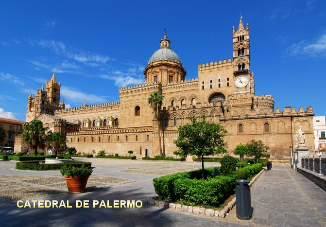
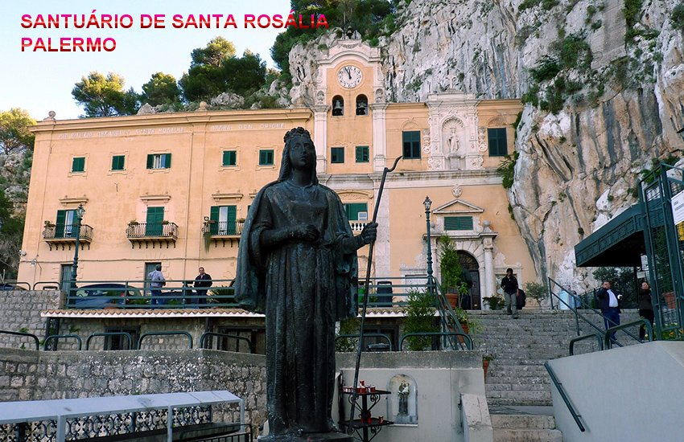

“SINAL DIVINO”

A REALIDADE
APARECE
Em Maio de 1203,
aquela senhora querendo retribuir sua cura decidiu visitar o Convento dos Padres
Beneditinos, principalmente a Igreja, onde os religiosos se reuniam para
Orações, Santas Missas e Celebrações Religiosas. Ela procurou um Sacerdote
que pudesse confessá-la. Ajoelhou-se, fez o sinal da Cruz e disse:
PRECIOSA
REVELAÇÃO
- “Padre, eu
sou uma costureira que passei serias dificuldades com minha saúde. Tantos foram
os meus problemas, que não estava conseguindo realizar os
trabalhos e nem as
encomendas mais modestas. Então decidi rezar com toda a minha fé suplicando a
intercessão de NOSSA SENHORA e de Santa Rosália, pedindo-lhes que me ajudassem e
conseguissem a misericórdia de DEUS para mim, concedendo-me o alivio das minhas
terríveis dores e a cura da minha abominável doença, restabelecendo as minhas
condições de saúde, proporcionando-me continuar com o meu trabalho.”
- “Dias após,
Santa Rosália me apareceu com a permissão Divina, e curou todos os meus males,
para minha felicidade e imensa alegria. E nesta visita providencial e
inesquecível, ela me fez preciosas revelações sobre a sua existência, pedindo-me
que levasse os fatos ao conhecimento das autoridades religiosas. Como eu não
conheço o Bispo local e nenhuma autoridade religiosa, decidi vir a Igreja e
revelar o assunto a um Sacerdote”.
O Padre muito
admirado com aquele relato ouviu atenciosamente e em completo silêncio, toda a
descrição que aquela senhora lhe fazia:
- “Rosália
contou-me um resumo da sua vida: abandonou os pais quando tinha 14 anos de
idade, porque eles queriam que ela se casasse. Conduzida por Anjos ficou
residindo na Gruta Quisquina, vivendo ali por sua vontade, repleta de privações
e com árduas mortificações, que ela mesma se submeteu, por amor a DEUS,
suplicando a NOSSO SENHOR em suas orações, a conversão da humanidade, a fim de
que todos conhecessem a incomensurável bondade Divina, que verdadeiramente quer
a salvação de todas as pessoas. Rosália com os olhos brilhando, deixava
transparecer a força e o fulgor da sua vontade, ardentemente manifestada em
abraçar, consolar e acariciar JESUS e a SANTÍSSIMA VIRGEM MARIA. Sua alimentação
era bastante simples, com raízes, ervas e frutas silvestres que colhia na
redondeza; vivia na Gruta completamente ignorada pela humanidade. Nenhuma pessoa
conseguiu acessar o interior da Gruta. Todavia, frequentemente era visitada
pelos Anjos que lhe serviam refeições e lhe transmitia os ensinamentos e a
certeza do infinito Amor de DEUS. Assim, nesta simplicidade decorreram os dias
da sua vida na Terra. Com a face repleta de felicidade confirmou o que sempre
desejou alcançar na eternidade: desfrutar das alegrias, do conforto e do imenso
amor de DEUS e de nossa MÃE SANTÍSSIMA”.
Concluída a
Confissão, ao se despedir, a senhora não deixou o seu nome, apenas disse ao
Sacerdote que ia escrever mais detalhes da visão, com a finalidade de melhor
completar a descrição feita pela Santa. Quando tivesse terminado, voltaria ao
Convento para lhe entregar.
E NÃO
ACONTECEU NENHUMA DEMORA
Uma semana
depois, a senhora voltou ao Convento e procurou o Padre Confessor. Entregou-lhe
um escrito, onde estava o complemento com os detalhes das revelações de Santa
Rosália, justamente com o objetivo de tornar mais lúcido o relato do
Confessionário. O documento que ela entregou ao Sacerdote estava assinado:
Signora C. Vespri, e começava com as seguintes palavras:
“Com prazer,
aqui completo o conteúdo da Revelação feita por Santa Rosália, para maior glória
de DEUS e alegria de Nossa MÃE SANTÍSSIMA.”
E escreveu:
“Santa Rosália
disse, que sempre seguia os ensinamentos dos Anjos, porque sabia que eram ordens
Divina. Aproximadamente depois de um
ano em Quisquina, NOSSO SENHOR sabedoria infinita, que sempre procura testar
e provar os seus eleitos preparou diversos acontecimentos, no sentido de conceder
a filha escolhida, uma coroa de gloria compatível com a grandeza do seu amor e
da sua fidelidade. Então permitiu a satanás que fizesse as suas tribulações para
testar Rosália. Foram momentos difíceis e de grande sofrimento que ela soube
atravessar pela grandeza e perfeita convicção de seu amor a DEUS. O maligno fez
com que ela sofresse fortes dores de cabeça e de estômago, ao lado de sentir
sensações de frio e de calor tão intensas, que pareciam atingir-lhe os ossos. E
sorrateiramente lhe recordava os confortos do palácio, sugerindo-lhe a idéia de
que tudo o que ela fizera tinha sido uma loucura, porque na verdade ela não
conseguiria suportar os sofrimentos daquela vida eremita. E assim, sempre
buscando maneiras de fazê-la sofrer o demônio passou a insinuar ao pensamento
dela fortes tentações contra a pureza. Tantos eram os tipos de tentações que ela
teve que se apegar com mais ímpeto e dedicação as armas das orações e das
mortificações, e muitas vezes, com o rosto banhado em lágrimas, com medo de
ceder às tentações do maligno, gritava e suplicava o auxilio Divino. O tempo
corria e o demônio sempre arquitetando ia buscando outras maneiras de seduzi-la.
Agora surgiu como um lindo jovem querendo conquistar o seu coração para
desviá-la do seu amor dedicado a CRISTO. Mais uma vez o capeta foi vencido por
ela, que alcançando o crucifixo com as mãos implorou o auxilio do Redentor, seu
verdadeiro amor. Dias após, o demônio se materializou num emissário de Sinibaldo,
seu pai, dizendo-lhe com simpatia que veio buscá-la para que retornasse a Corte.
Para Rosália esta foi uma das piores seduções, porque tinha pavor só de imaginar
em voltar para a Corte. Sentindo o abominável assédio da tentação, volveu seus
olhos em direção ao Céu e suplicou a piedade Divina. Então lhe apareceu JESUS
Crucificado, que afugentou imediatamente o maligno. A luz e o esplendor que
emanavam das chagas de CRISTO eram tão intensos que Rosália ajoelhou
respeitosamente, e NOSSO SENHOR
“recomendou-lhe perseverança em meio a todos os padecimentos. Mandou que ela
se aproximasse e desprendendo o braço direito da Cruz, abraçou-a contra
o Seu Divino Peito”.
Quisquina, NOSSO SENHOR sabedoria infinita, que sempre procura testar
e provar os seus eleitos preparou diversos acontecimentos, no sentido de conceder
a filha escolhida, uma coroa de gloria compatível com a grandeza do seu amor e
da sua fidelidade. Então permitiu a satanás que fizesse as suas tribulações para
testar Rosália. Foram momentos difíceis e de grande sofrimento que ela soube
atravessar pela grandeza e perfeita convicção de seu amor a DEUS. O maligno fez
com que ela sofresse fortes dores de cabeça e de estômago, ao lado de sentir
sensações de frio e de calor tão intensas, que pareciam atingir-lhe os ossos. E
sorrateiramente lhe recordava os confortos do palácio, sugerindo-lhe a idéia de
que tudo o que ela fizera tinha sido uma loucura, porque na verdade ela não
conseguiria suportar os sofrimentos daquela vida eremita. E assim, sempre
buscando maneiras de fazê-la sofrer o demônio passou a insinuar ao pensamento
dela fortes tentações contra a pureza. Tantos eram os tipos de tentações que ela
teve que se apegar com mais ímpeto e dedicação as armas das orações e das
mortificações, e muitas vezes, com o rosto banhado em lágrimas, com medo de
ceder às tentações do maligno, gritava e suplicava o auxilio Divino. O tempo
corria e o demônio sempre arquitetando ia buscando outras maneiras de seduzi-la.
Agora surgiu como um lindo jovem querendo conquistar o seu coração para
desviá-la do seu amor dedicado a CRISTO. Mais uma vez o capeta foi vencido por
ela, que alcançando o crucifixo com as mãos implorou o auxilio do Redentor, seu
verdadeiro amor. Dias após, o demônio se materializou num emissário de Sinibaldo,
seu pai, dizendo-lhe com simpatia que veio buscá-la para que retornasse a Corte.
Para Rosália esta foi uma das piores seduções, porque tinha pavor só de imaginar
em voltar para a Corte. Sentindo o abominável assédio da tentação, volveu seus
olhos em direção ao Céu e suplicou a piedade Divina. Então lhe apareceu JESUS
Crucificado, que afugentou imediatamente o maligno. A luz e o esplendor que
emanavam das chagas de CRISTO eram tão intensos que Rosália ajoelhou
respeitosamente, e NOSSO SENHOR
“recomendou-lhe perseverança em meio a todos os padecimentos. Mandou que ela
se aproximasse e desprendendo o braço direito da Cruz, abraçou-a contra
o Seu Divino Peito”.
“Foi com vistas
a todas estas lutas e terríveis acontecimentos, que dias após, o seu Anjo a
inspirou gravar na rocha, bem junto a entrada da Gruta, o motivo pelo qual ela
escolheu viver ali:” “Eu,
Rosália, filha de Sinibaldo, senhor de Quisquina e do Monte das Rosas, por amor
ao meu SENHOR JESUS CRISTO, determinei-me a viver nesta Gruta”.
TRANSLADO PARA
O MONTE PELLEGRINO

“Transcorridos
alguns anos, determinou o SENHOR que Ela se mudasse para outro lugar. Em face da
decisão do translado para outra Gruta, Rosália foi escoltada por diversos Anjos
que a conduziram a Palermo. E assim, depois de uma longa jornada, chegou ao
Monte Pellegrino, onde havia uma grande Gruta para a sua nova residência. Era
uma montanha imponente e de difícil acesso. A Gruta escolhida entre os diversos
penhascos nunca era atingida pelos raios do sol. A água das nascentes gotejava
sem interrupção fazendo com que o seu interior, permanecesse um rigoroso
inverno. Esta Gruta era mais sombria e mais áspera do que a outra, e esta
realidade muito a agradou. Foi neste lugar que Rosália passou os últimos anos da
sua existência terrena. Após dezoito anos de vida austera e solitária, entregou
sua alma a DEUS no dia 4 de setembro de 1160”.
Algumas fontes dizem
que a razão desta mudança foi que a presença dela passou a ser mencionada por viajantes
que passavam pela redondeza, e tinham certas suspeitas, e também, pela constante
pesquisa de membros da sua família que já a procurava nas proximidades de Quisquina.
A PROVIDÊNCIA DIVINA
O Sacerdote de posse
daquele documento, com rapidez e preocupação, levou ao conhecimento do Superior
Beneditino, mostrando-lhe o conteúdo daquela revelação
. Conversaram
e trocaram idéias de como deveriam agir, para atender o pedido de Santa Rosália.
As noticias correram
ligeira e o povo de Palermo logo honrou Rosália como Santa. No final do século XII,
muitas Igrejas e Capelas já tinham sido dedicadas a ela em diversas regiões da Itália.
No ano 1624 Palermo foi assolada por uma terrível epidemia de peste que matou
muita gente. E até aquela época o corpo de Rosália ainda não tinha sido
encontrado. Então esta foi à oportunidade certa para DEUS NOSSO SENHOR fazê-la
realmente conhecida por todos. Uma senhora que sempre rezava para a Santa, em
sonho recebeu a visita Dela que lhe disse onde estava enterrado o seu corpo na
Gruta do Monte Pellegrino. Essa mulher comunicou aos Frades Franciscanos do Convento
próximo ao monte Pellegrino, e no dia seguinte os religiosos realizaram uma missão
para encontrar o corpo da Santa. E de fato encontraram as suas relíquias no local
indicado, no dia 15 de junho de 1624. Isto aconteceu após insistentes escavações.
Encontraram uma grande pedra de alabastro dentro da qual, se achava o corpo da
Santa. O fato
aconteceu assim: “Por ordem Divina,
os Anjos prepararam uma pedra de alabastro em forma de concha para servir de ataúde e nela
depositaram o corpo da jovem Rosália, que foi sepultada bem próxima a entrada da Gruta”.
Abrindo a pedra de alabastro encontraram
os ossos e relíquias da Santa, um Crucifixo e contas que ela usava para rezar o Saltério.
As relíquias foram
transportadas para a Capela do Arcebispo de Palermo. O Cardeal Giannettino Doria
para certificar-se da sua autenticidade, ordenou uma investigação. Enquanto isso,
a peste terrivelmente continuava devastando a cidade, matando pessoas sem piedade.
Então a fé daqueles que a possuíam, encontrou o caminho certo: rezar para Santa
Rosália interceder junto a DEUS suplicando piedade para o povo de Palermo, a fim
de que acabasse com a epidemia de peste. NOSSO SENHOR respondeu prontamente! As
pessoas foram admiravelmente curadas de uma maneira bastante rápida, para
espanto e alegria da população, e a peste desapareceu.
Foi aberto o processo
canônico que terminou em Junho de 1625. As relíquias da Santa foram conduzidas em
procissão por toda a cidade de Palermo, e nunca mais a peste voltou a incomodar
o povo daquela região.
Em 1630, o Papa
Urbano VIII inseriu Santa Rosália no Martirológio Romano com duas festas: no dia
15 de Julho, em comemoração a descoberta das suas relíquias, e em 4 de Setembro, Festa
do seu nascimento. Santa Rosália também foi escolhida padroeira de Palermo.
A urna com os restos mortais da Santa está guardada no Duomo de Palermo, na
Sicília, Itália.
Que Santa Rosália
com seu exemplo corajoso e dedicado, nos auxilie com sua intercessão, a todos nós,
a fim de que ainda aqui na Terra possamos participar da Comunidade Bem-Aventurada
dos Anjos de DEUS e de todas as pessoas que se mantêm unidas ao CRIADOR.

SANTUÁRIO DE SANTA
ROSÁLIA EM PALERMO - ITÁLIA
Ao fundo a Gruta onde
ela viveu os últimos anos e morreu.

 PRÓXIMA PÁGINA
PRÓXIMA PÁGINA
PÁGINA ANTERIOR
RETORNA AO ÍNDICE